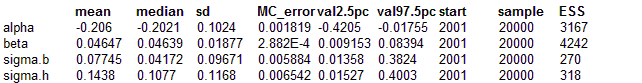
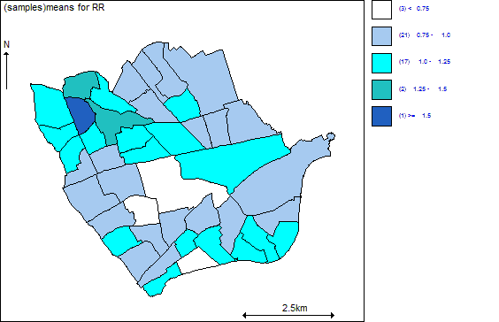

Convolution priors:Lung cancer in a London Health Authority
This example has been modified from a London Health Authority annual report. The theme of the report was inequality in health and the aim was to investigate links between poverty and ill health. To investigate this issue, the Health Authority carried out a series of disease mapping studies at census ward level. There are 44 wards in the Health Authority in this example. The data are simulated observed and expected counts of lung cancer incidence in males aged 65 and over living in the Health Authority region; a ward level index of socio-economic deprivation is also available.
We fit the following model, allowing a convolution prior for the random effects:
O
i ~ Poisson(
μi)
log
μi = log E
i +
α +
β depriv
i + b
i + h
i
where depriv
i is the deprivation covariate, b
i are spatial random effects assigned a CAR prior, and we introduce a second set of random effects h
i for which we assume an exchangeable Normal prior. The random effect for each area is thus the sum of a spatially structured component b
i and an unstructured componenth
i . This is termed a convolution prior (Besag, York and Mollie 1991; Mollie 1996). Besag, York and Mollie argue that this model is more flexible than assuming only CAR random effects, since it allows the data to decide how much of the residual disease risk is due to spatially structured variation, and how much is unstructured over-dispersion.
The code for this model is given below.
Model model {
for (i in 1 : N) {
# Likelihood
O[i] ~ dpois(mu[i])
log(mu[i]) <- log(E[i]) + alpha + beta * depriv[i] + b[i] + h[i]
# Area-specific relative risk (for maps)
RR[i] <- exp(alpha + beta * depriv[i] + b[i] + h[i])
# Exchangeable prior on unstructured random effects
h[i] ~ dnorm(0, tau.h)
}
# CAR prior distribution for spatial random effects:
b[1 : N] ~ car.normal(adj[], weights[], num[], tau.b)
for(k in 1:sumNumNeigh) {
weights[k] <- 1
}
# Other priors:
alpha ~ dflat()
beta ~ dnorm(0.0, 1.0E-5)
tau.b ~ dgamma(0.5, 0.0005)
sigma.b <- sqrt(1 / tau.b)
tau.h ~ dgamma(0.5, 0.0005)
sigma.h <- sqrt(1 / tau.h)
}
Data
list(N = 44,
O = c(4, 8, 3, 6, 2, 7, 7, 2, 10, 13, 5, 7, 9, 3, 3, 1, 2, 3, 19, 7, 5, 4,
9, 2, 4, 6, 14, 13, 6, 7, 9, 3, 4, 10, 10, 8, 23, 24, 18, 10, 6, 4, 17, 7),
E = c(7.20902956, 7.81436792, 3.46693788, 7.04393728, 7.37412184,
4.45749156, 6.3285374, 4.45749156, 6.3285374, 6.76878348, 9.30019844,
6.6036912, 3.17289144, 1.68706092, 4.43859892, 6.6036912, 7.26406032,
6.21847588, 7.31909108, 6.21847588, 7.04393728, 5.2934088044,
10.370546722, 6.58993351, 6.1573917364, 7.6701873288, 13.9359896624,
12.7473252464, 6.2658023336, 10.96487893, 8.5341702608, 6.1034615916,
6.6977937996, 8.9661617268, 8.8043712924, 8.3723798264, 15.3166165772,
15.7486080432, 17.6933951016, 8.642580858, 4.969277628, 6.3736626232,
11.2890101064, 6.3736626232),
depriv = c(1.233, 8.162, 0.919, -0.78, -1.182, 3.647, 6.47, 0.948, 4.479,
11.739, -0.125, 0.063, 4.392, -1.021,-0.609, 1.896, -0.053, 1.043, -0.899,
8.441, 5.81, 3.575, 5.78, -0.375, 4.828, 1.668, 4.97, 10.21, -0.234, 7.804,
5.544, -1.699, 7.029, 2.581, 0.958, 2.811, 6.376, 8.627, 1.139, 3.169, 3.332,
2.754, 7.55, 3.961),
num = c(5, 4, 6, 7, 4, 5, 6, 6, 3, 6,
5, 3, 4, 5, 6, 6, 5, 3, 5, 3,
2, 4, 4, 6, 6, 3, 3, 6, 4, 4,
8, 9, 5, 7, 3, 3, 2, 4, 5, 5,
5, 3, 8, 6
),
adj = c(
17, 12, 9, 8, 4,
14, 13, 10, 7,
32, 17, 15, 11, 8, 6,
33, 32, 17, 16, 14, 12, 1,
21, 19, 15, 6,
19, 15, 11, 5, 3,
43, 16, 14, 13, 10, 2,
18, 17, 15, 9, 3, 1,
18, 8, 1,
43, 38, 20, 13, 7, 2,
32, 24, 19, 6, 3,
14, 4, 1,
20, 10, 7, 2,
16, 12, 7, 4, 2,
21, 18, 8, 6, 5, 3,
43, 33, 23, 14, 7, 4,
32, 8, 4, 3, 1,
15, 9, 8,
27, 24, 11, 6, 5,
38, 13, 10,
15, 5,
44, 39, 26, 25,
43, 33, 31, 16,
41, 40, 32, 27, 19, 11,
44, 39, 34, 31, 28, 22,
44, 39, 22,
40, 24, 19,
39, 35, 34, 31, 29, 25,
36, 35, 34, 28,
43, 38, 36, 34,
44, 43, 34, 33, 32, 28, 25, 23,
44, 41, 33, 31, 24, 17, 11, 4, 3,
32, 31, 23, 16, 4,
43, 36, 31, 30, 29, 28, 25,
39, 29, 28,
34, 30, 29,
42, 40,
43, 30, 20, 10,
35, 28, 26, 25, 22,
42, 41, 37, 27, 24,
44, 42, 40, 32, 24,
41, 40, 37,
38, 34, 31, 30, 23, 16, 10, 7,
41, 32, 31, 26, 25, 22
),
sumNumNeigh = 212
)
Inits for chain 1
list(tau.b = 0.5, tau.h = 0.2, alpha=0, beta=0)
Inits for chain 2
list(tau.b = 1.0, tau.h = 1.0, alpha=1.0, beta=1.0)

